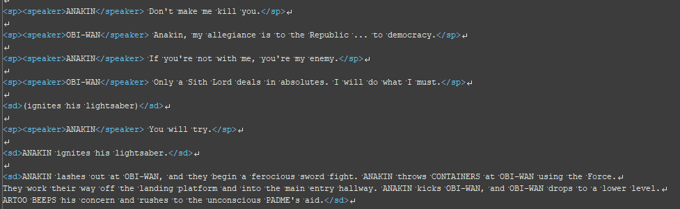
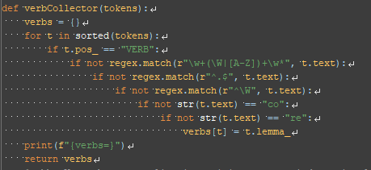
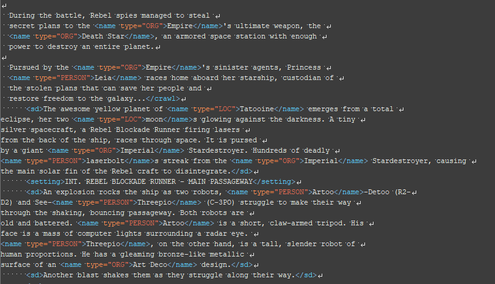
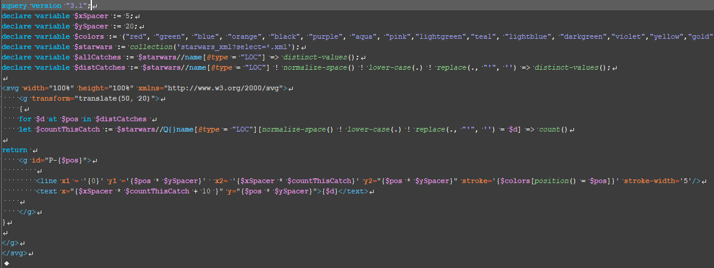

GitHub: XML Code
The XML was created by putting the scripts of the six films into a collection and using Regex to tag things like Stage Directions, Speeches, and Speakers.
GitHub: Python Code
Once the XML was finished Python code was written that uses Spacy and Saxon to tag names of locations, characters, and organizations, and seperate code found verbs. The python outputs the XML files with these new tags.
GitHub: Name Tagged XML Verb Taggde XML
The XML code that was tagged using python was used as the basis for our analysis.
GitHub: SVG Graphs Cytoscape Graphs
Using XQuery we were able to reach into the XML and collect information based on Locations and Verbs.
We than used SVG and Cytoscape to represent that data in the form of graphs.
